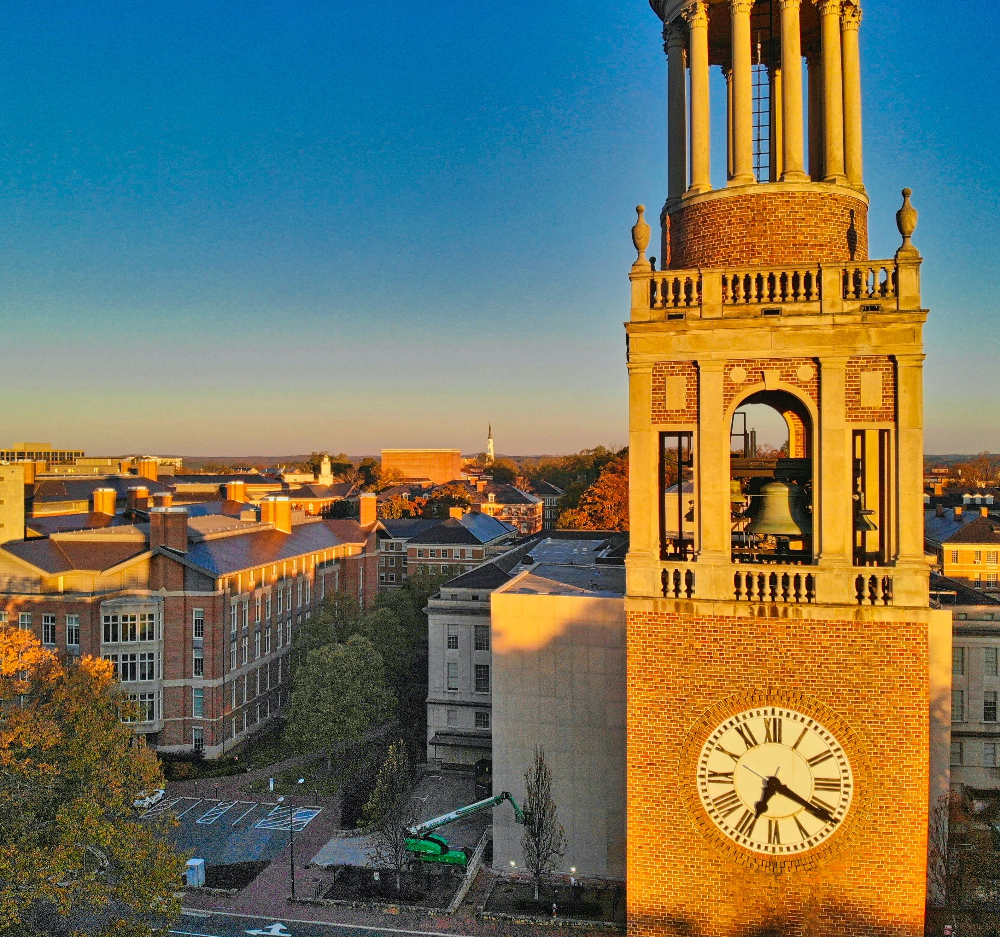

Introduction to the City of Chapel Hill
As another pillar of the research triangle—together with Raleigh and Durham—Chapel Hill is a scenic city full of innovation, growth, and activity. Known for excellent educaitonal oppurtunities, diverse culture, the modern revivial of old-styled music, and a passion for college basket ball and women's soccer; Chapel Hill is a hub of activity that is pleasure to visit or settle down in.
Places to Visit
- Franklin Street: A vibrant main thoroughfare offering a variety of dining, shopping, and entertainment options. It's a must for the complete Chapel Hill experience. Look into walking tours to ensure you don't miss out on anything.
- University of North Carolina: Explore the scenic campus, known for its historic landmarks such as the Old Well and the beautiful Coker Arboretum.
- Morehead Planetarium & Science Center: An educational and historic facility providing engaging exhibits. Includes a planetarium show. Notable for its role in astronaut training during the space race.
- Ackland Art Museum: Located at the edge of UNC, this museum houses an eclectic collection of art, ranging from European masterworks to contemporary pieces.
- North Carolina Botanical Garden: A serene escape featuring native plant species, walking trails, and themed gardens, perfect for nature lovers.
- The Chapel of the Cross: An historic Episcopal church near the UNC campus. A spiritual haven for many, especially local college students.